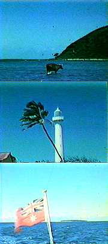

|
 |
The
fishing trawler was registered in Australia, but the captain was Thai and the crew were mostly Pacific Islanders.
They would troll for tuna and mackerel through the archipelagoes of Indonesia and up to Thailand. Travis didn't mind the work, especially if he was speeding, but the smell of fish got to him after a couple of months... ...and he jumped ship at Bangkok, a good town for drugs. |